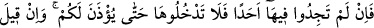
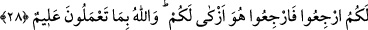

şekli budur.” buyurdu.”[145]
Yine Rasûlullah (s.a.)’in şöyle buyurduğu rivâyet edilmiştir: “Müslümanın müslüman
üzerinde altı hakkı vardır: Karşılaşınca ona selâm verir, dâvet edince ona icâbet
eder, gıyâbında onun iyiliğini ister, aksırınca ona “yerhamükallah (Allah sana
merhamet etsin) diye karşılık verir, hastalanınca onu ziyâret eder ve öldüğünde
cenazesinde hazır bulunur.”[146]
Bir evde yangın çıkar, hırsız girer, ve haksız yere adam öldürülür yahut engellenmesi
gereken bir kötülük zuhûr ederse, işte o zaman böyle bir eve girmek için izin istemek ve
selâm vermek gerekmez. Çünkü bütün bu durumlar, fakihlerin “Zaruret olan yerler,
şerîatin koyduğu kurallardan istisnâ edilmiştir” sözü gereğince müstesnâ kılınmıştır.
Çünkü zarûretler, haramları mübah kılar.
el-Keşşâf sâhibi Zemahşerî der ki: “Nice dînî konular vardır ki insanların yanında
bunlar nesh edilmiş şerîat gibidirler. Çünkü insanlar bunlarla ameli terk etmişlerdir. İşte
evlere girerken izin istemek de bu dînî prensiplerden biridir.”
Âyet-i kerîmede mecâzî ve fânî cesed evlerine girip oralarda rahatça huzûr içinde
oturmayı terk etmek lâzım geldiğine işâret vardır. Bilakis kurtuluş için vedâ selâmı
lâzımdır. Kul, fâni dünyaya ve şehvetlerine meyli terk edip karar yurdu olmayan dünya
evlerinden yüz çevirdiği zaman hakîkî vatana dönmüş olur ki onu sevmek îmandandır.
Eğer vatan istiyorsan dışarıya adım at.
28. Orada hiçbir kimse bulamadınızsa, size izin verilinceye kadar oraya girmeyin.
Eğer size, “Geri dönün!” denilirse, hemen dönün. Çünkü bu, sizin için daha nezih
bir davranıştır. Allah, yaptığınızı bilir.
“Orada” yâni o evlerde izin vermeye yetkili “hiçbir kimse bulamadınızsa,” çünkü
kadın ve çocuklardan izin vermeye yetkisi olmayanlar yok hükmündedirler. Ya da
tamamen kimse yoksa, izin verebilecek biri gelip “size izin verilinceye kadar” sabırlı
olun “oraya girmeyin” Çünkü içinde kadınların ve çocukların bulunduğu bir eve
ansızın girince görülmemesi gereken bir kısım şeyleri görme tehlikesi vardır. İçinde
kimse bulunmayan eve girince ise insanların, gizli tutma îtiyadında oldukları bazı
şeylere muttali olma sakıncası vardır. Hem de başkasına âid bir mülkünde izinsiz
tasarrufta bulunmak mutlak olarak yasaktır. Yâni boş bir eve izinsiz girmek hırsızlık
töhmetine sebeptir.
Fakir (Bursevî) der ki: Bir defasında bu âyet-i kerîmenin hükmünden gafil olarak
yakınlarımdan birinin boş halde bulunan evine girdim. Oracıkta bulunan komşular bizi